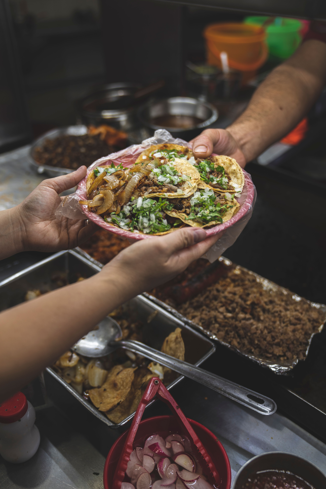

Tacos

Ingredients
- Small tortillas - 4
- Minced beef - 250 grams
- Cheddar cheese - 80 grams, grated
- Lettuce - 50 grams, shredded
- Tomato - 1, diced
- Red onion - 1/4, diced
- Taco seasoning - 1 tbsp
- Salsa - 2 tbsp
Steps
- Heat a frying pan over medium heat
- Add the minced beef and cook until browned
- Add the taco seasoning and mix well
- Warm the tortillas in a separate pan
- Place some cooked beef into each tortilla
- Add lettuce, tomato, red onion and grated cheese
- Top with salsa and serve
Home